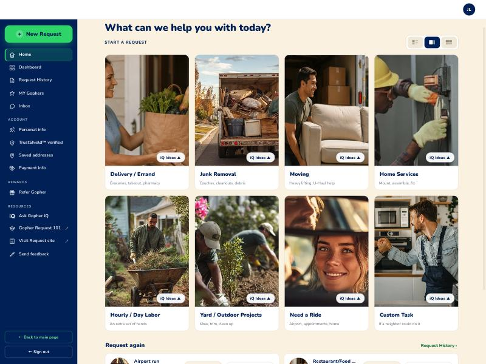
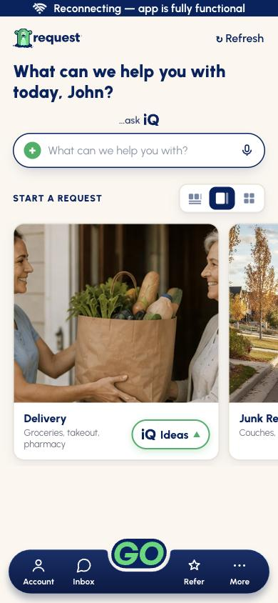
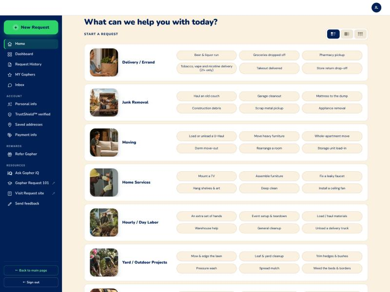
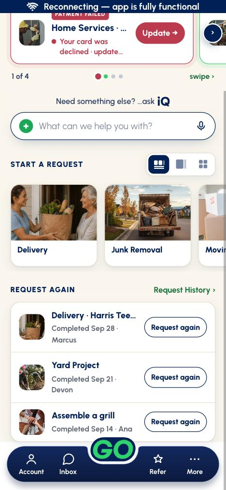
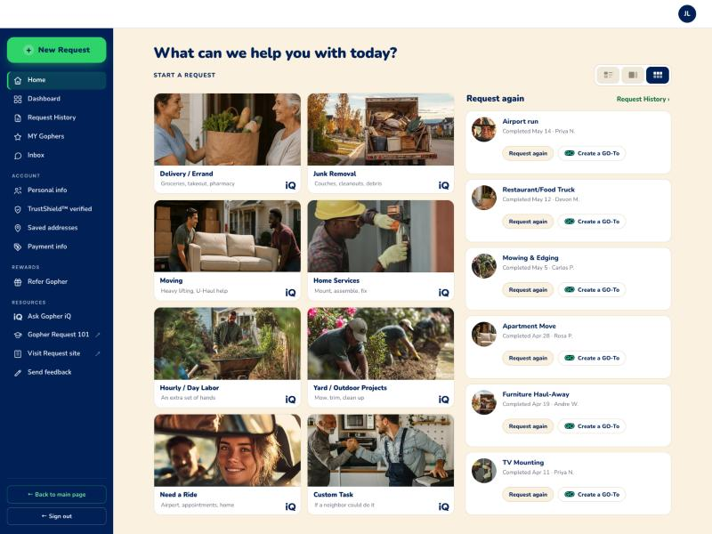
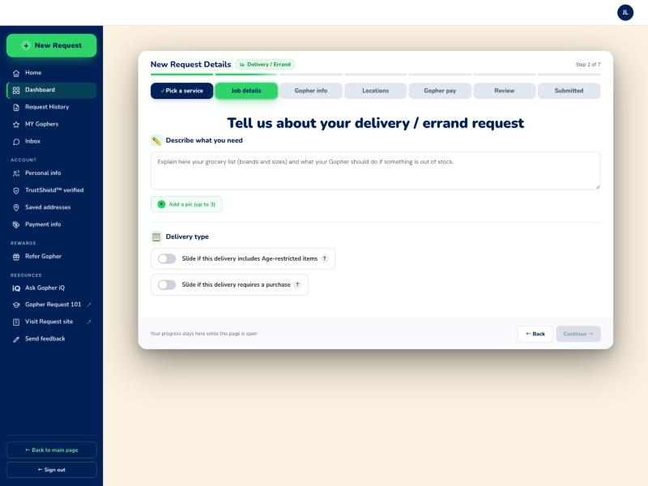
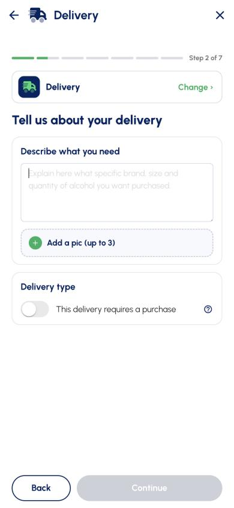
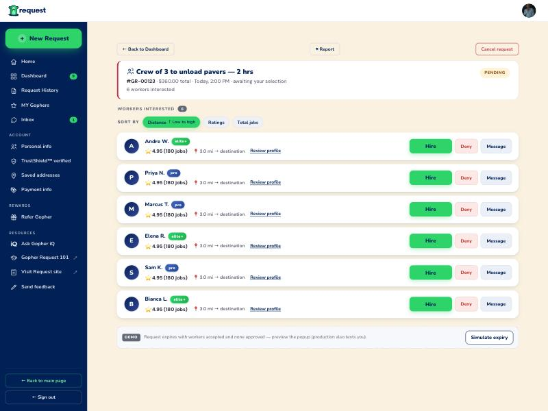
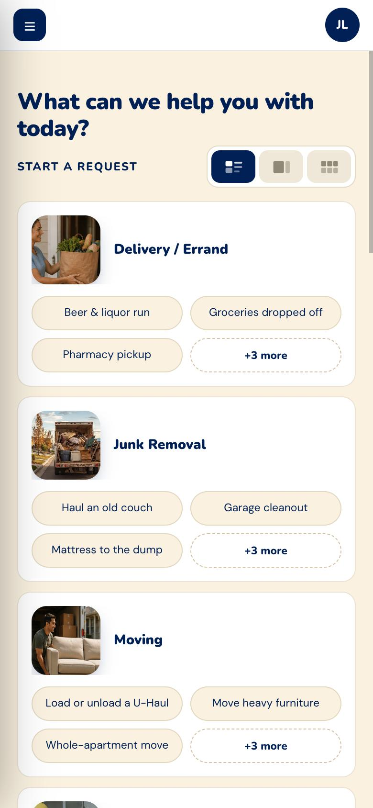

Request home — web vs app, after the 10/14 pass
The web Request dashboard as it is live after 10/14, set against the live app. This replaces the 10/12 comparison. Since then the web gained List view B with a sixth example, the worker list was rebuilt, the dashboard now works on a phone, and two of the 10/12 open items quietly closed. One 10/12 claim was also wrong and is corrected below.
What each column is, and how sure each line is
- Web: captured 2026-10-14 at 1440×1080 (and 390 for the phone) from
Final/gopher-request.html, byte-identical to live4624367(deployed 4:40 PM ET, verified on Pages, TigerTech and the twin). - App, images: the desk's canonical
N-shell set, the same four images as 10/12. They are still current: the app's home layout has not changed since. Every production commit tosrc/component/homeafter 10/12 21:17 is iQ answers or the dispute flow. - App, every claim in a table: read first-hand from
gopher-mobile-requester-capacitorjsorigin/productionf320e7ec5. Files:home/HomeCategories.js,home/homeNav.js,home/iqIdeas.js,live/OffersSheet.js,live/offerRows.js,helpers/categoryLabel.js,css/iqGuidance.css. Nothing here is inherited from another session. - ⚠️ Form factor is still the honest difference. Where the web differs because a dashboard is 1440px wide, that is noted as width, not drift. Since 10/13 the live apps are the truth for words and logic (owner), so where the two disagree on copy, the app's words win.
Big cards — the app's default
The app shows one card at a time; the web shows four across. Both carry the iQ Ideas ▲ pill in the same corner and, since 10/12, the same one-line hint under each name.


| Web | App | |
|---|---|---|
| iQ Ideas pill | Bottom right of the photo, on all 8 | Bottom right of the photo |
| Photo tap | Straight to Step 2 | Straight to Step 2 |
| Cards visible | Eight, four across | One, swiped |
| Hint under the name | closedAll 8, word for word ("Groceries, takeout, pharmacy" …) | CATEGORY_HINT |
| Category names | Delivery / Errand · Yard / Outdoor Projects · the other six the same | Delivery · Yard Project · Other shows as Custom Task on both |
List (web) vs Row (app)
These are no longer the same idea in two sizes. The web's List puts each category's examples beside it. The app's Row is a sliding strip of categories with Request again under it, and no examples at all.


| Web | App | |
|---|---|---|
| Examples | Six per category, a fixed 3×2 block | correctedNone on the Row. The ideas live in the iQ Ideas sheet (five per category). The only examples on the Row are Popular near you, one per category, shown when there is no history. |
| The first five | The app's five, same words, same order, in all 8 categories | IDEAS in iqIdeas.js |
| The sixth | Web-only, in all 8: Store return drop-off · Appliance removal · Storage unit load-in · Install a ceiling fan · Unload a delivery truck · Weed the beds & borders · Pick up a family member · Hang holiday lights | — |
| Photo | 104×104, rounded 20, floating | Photo card in the strip |
| Rows | Every row the same height (138px at 1440); the owner's 10/13 symmetry ruling | One strip |
correctedThe 10/12 doc said the app shows "the same five, as chips" under the rail. The image it sat next to shows no chips, and the code has none. That row was wrong.
Doubles — two across
Unchanged since 10/12, and still the closest match. The web spends its spare width on a Request again column.


| Web | App | |
|---|---|---|
| Grid | Two across, four down | Two across |
| Request again | A column to the right, level with the grid | None in Doubles. The app shows it only in the Row view, under the strip (view === "row"). |
| Per card | Request again and Create a GO-To | Request again |
Step 2 — a tapped example
The owner's 10/5 behaviour holds on both: the box opens empty and the idea
shows as guidance. The guidance's wording drifted when the app moved to "worker" on 10/12;
the web was re-ported from the app and matches again since 10/14 (live f15bc56).


| Web | App | |
|---|---|---|
| Box contents | Empty (value "") | Empty |
| Guidance colour | Placeholder, #707070 (measured rgb 112,112,112) | Placeholder, #707070 |
| Guidance words | closed"…what your worker should do…" (re-ported from the app 10/14; it said "your Gopher" on 5 lines) | "…what your worker should do…" (G40-549, 10/12, John 10/11) |
| Step tracker | Seven-segment bar, "Step 2 of 7", and seven labelled tabs | Seven-segment bar, "Step 2 of 7" |
| Category shown as | A chip beside the title; the Pick a service tab is the way back | A full-width card with Change › |
| Purchase switch | "…requires a purchase" (G40-623, 10/14) | "This delivery requires a purchase" |
newThe worker list — who is interested in a request
Rebuilt 10/14 (Stage 3 option B) and live. The actions now match the app: Hire / Deny / Message, Hire first and widest. "Consider" is gone; it is Connect-only (owner 10/14). There is no app screenshot of the offers sheet in the desk's set, so the app column is read from the code.

OfferCard: name and stats on top, then Hire · Deny · Message.
Stats: Jobs: 396 | Rating: 5.00
Badge: PRO / PRO+ (gopher_type_id 1 / 2)
Distance: only when require_distance_approval, as "4.2 mi from your drop-off"
Price: per offer, the previous price struck through
| Web | App | |
|---|---|---|
| Actions | closedHire · Deny · Message | Hire · Deny · Message |
| Badge | elite / elite+ | PRO / PRO+ · deferred by the owner, 10/14: "Pro and Pro+ are current. Elite / Pro conversion later." |
| Stats | "⭐ 4.95 (180 jobs)" | "Jobs: 396 | Rating: 5.00" |
| Distance | Always: "3.0 mi → destination" | Only when distance approval is needed |
| Price | None on the row (a Bid amount only on ask-for-bids requests) | Every offer, with the previous one struck through |
| Layout | A row: actions on the right, all six on one screen | A column card. The width, not drift; on a phone the web row wraps to the same shape. |
newOn a phone
Live 10/14 (Stage 4 option C). Below 1150px each List row stacks, with photo and name on top and three examples plus "+3 more" beneath. The last chip expands in place. Before this, all 48 examples were cut off on a 390 phone.

| Web at 390 | App | |
|---|---|---|
| Examples | 3 + "+3 more", every row 194px | None on the Row (see above) |
| Side gutter | One gutter: 18px on home, 16px everywhere else (it was 36 on home) | — |
| Inbox head | Fits: Back on its own line, Call icon-only (Block was clipped 27px) | — |
What is still different, and whether it should be
| Difference | Why | Worth closing? |
|---|---|---|
| Guidance wording | Five web lines said "your Gopher" where the app says "worker" (Delivery groceries; Labor; three on Ride): the web's port predated the app's 10/12 change. Re-ported from app production f320e7ec5 by script, the sixth ideas kept. | closedOwner 10/14; live f15bc56. |
| The sixth example | Web-only in all 8 categories. Added on 10/13 so List view's 3×2 block is full, the owner's symmetry ruling. | closedOwner 10/15: leave it. A deliberate web-only divergence; do not re-raise. |
| Category names | Web "Delivery / Errand" and "Yard / Outdoor Projects"; the app "Delivery" and "Yard Project". The other six match. | closedOwner 10/15: "App is truth". Web now "Delivery" / "Yard Project" (live 0a1d57d). Go, Connect and Deals keep theirs (separate products). |
| Worker stats, distance, price | See the worker list above. Logic parity, not styling. | Yes, under the 10/13 "logic must be identical" ruling. Needs a ticket through the desk. |
| Badge names | elite / elite+ on web, PRO / PRO+ in the app. | Deferred by the owner (10/14). Do not bundle into a styling stage. |
| Message before hire (web only) | On a worker not yet hired, Message opens the Inbox, but no thread exists for the request yet, so it lands on an unrelated conversation. The old inline "Text" link did the same; Stage 3 made Message a primary button. | closedOwner 10/15 "web needs to behave like app": Message opens that worker's conversation pre-hire, as the app's messageOfferGopher does; the guard keeps contact hidden until hire (live 0a1d57d). |
| Card hint | Ported on 10/12; all 8 match the app's CATEGORY_HINT. | closed |
| Per-request icons | recMark() now draws the one-tone category mark from the record's category; the emoji is only a fallback for a record with no category. | closed |
| "Consider" on the worker list | Removed 10/14. It is a Connect feature that leaked into Request. | closed |
| Step tracker | Web keeps its labelled, clickable tabs above the same bar the app has. | closedOwner 2026-10-12: "disregard my 1. web stays and app stays." Do not re-raise. |
| Category card at Step 2 | The app's card has Change ›; the web shows a chip. | closedThe 10/12 doc left this "probably". The same day's ruling settles it: the web's Pick a service tab is the way back, which is why it needs no card. |
| Request again placement | Web: a column to the right; app: below. | No. This is the width. |
| Create a GO-To on the card | Web only; the app makes a GO-To from Request History. | No. The owner asked for it on 10/12. |
| Greeting | Closed 10/12: name in the headline, like the app. | Done. |